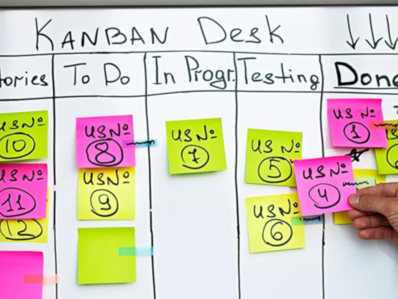
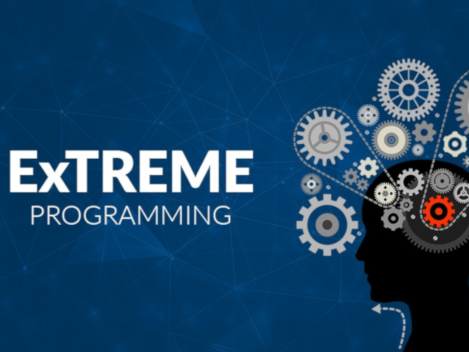
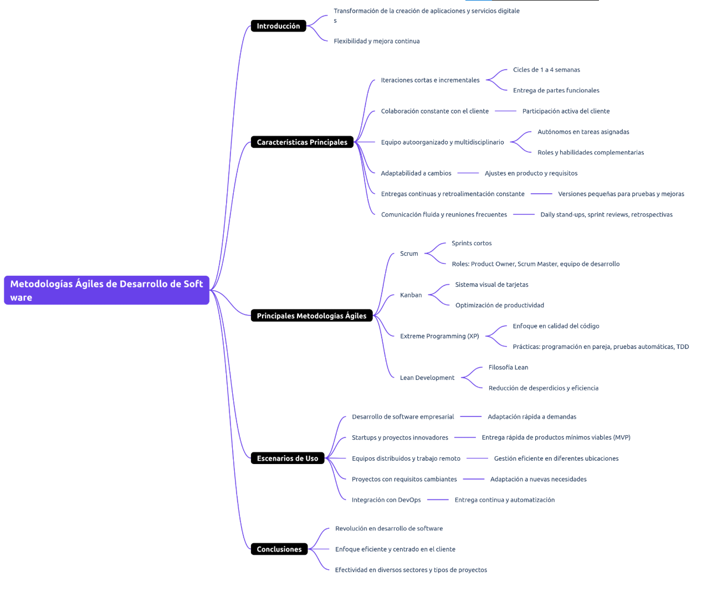

RA17
Identificació de les característiques i escenaris d'ús de les metodologies àgils de
desenvolupament de programari
Definició Metodologies Àgils
Les metodologies àgils han transformat la creació d'aplicacions i serveis digitals, basant-se en la flexibilitat i la col·laboració, millorant l'eficiència i la qualitat del desenvolupament de programari.
Característiques principals:
- Iteracions curtes i incrementals.
- Col·laboració constant amb el client.
- Equip autoorganitzat i multidisciplinari.
- Adaptabilitat als canvis.
- Lliuraments continus i retroalimentació constant.
- Comunicació fluida i reunions freqüents.
Escenaris d'ús:
- Desenvolupament empresarial i startups.
- Equips distribuïts i treball remot.
- Projectes amb requisits canviants.
- Integració amb DevOps.
Diferents Metodologies Àgils
Scrum
Iteracions curtes amb rols definits per millorar l'eficiència i l'adaptabilitat.

Kanban
Gestió visual del treball per optimitzar el flux i reduir colls d'ampolla.

Extreme Programming (XP)
Qualitat del codi i proves contínues per garantir un programari robust i fiable.
Lean Development
Optimització del desenvolupament i reducció del malbaratament per millorar l'eficiència.
Taula Comparativa de Metodologies Àgils
| Metodologia Àgil | Avantatges | Inconvenients |
|---|---|---|
| Scrum |
|
|
| Kanban |
|
|
| Lean Development |
|
|
| Extreme Programming (XP) |
|
|
Diagrama de Metodologies Àgils
